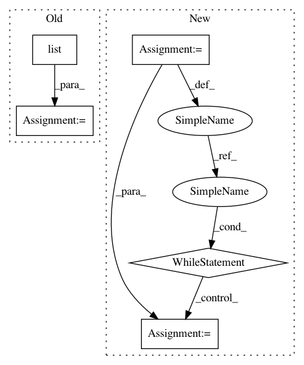

91855bdc8c0dcb933821be0fdb356cc43ffce585,reframe/frontend/dependency.py,,validate_deps,#Any#,81
Before Change
// Check for cyclic dependencies in the test name graph
visited = set()
unvisited = list(
itertools.zip_longest(test_graph.keys(), [], fillvalue=None)
)
path = []
while unvisited:
node, parent = unvisited.pop()
while path and path[-1] != parent:
After Change
// Check for cyclic dependencies in the test name graph
visited = set()
sources = set(test_graph.keys())
path = []
// Since graph may comprise multiple not connected subgraphs, we search for
// cycles starting from all possible sources
while sources:
unvisited = [(sources.pop(), None)]
while unvisited:
node, parent = unvisited.pop()
while path and path[-1] != parent:
path.pop()
adjacent = reversed(test_graph[node])
path.append(node)
for n in adjacent:
if n in path:
cycle_str = "->".join(path + [n])
raise DependencyError(
"found cyclic dependency between tests: " + cycle_str)
if n not in visited:
unvisited.append((n, node))
visited.add(node)
sources -= visited
In pattern: SUPERPATTERN
Frequency: 3
Non-data size: 5
Instances
Project Name: eth-cscs/reframe
Commit Name: 91855bdc8c0dcb933821be0fdb356cc43ffce585
Time: 2019-05-25
Author: karakasis@cscs.ch
File Name: reframe/frontend/dependency.py
Class Name:
Method Name: validate_deps
Project Name: NifTK/NiftyNet
Commit Name: f0ac6351b5ee28846121158b7f0cd34a109bef9a
Time: 2017-07-22
Author: wenqi.li@ucl.ac.uk
File Name: niftynet/utilities/misc_io.py
Class Name:
Method Name: match_volume_shape_to_patch_definition
Project Name: miso-belica/sumy
Commit Name: c16886fefa4cca5f7b45e52ff2fcb1b89876c70a
Time: 2013-03-05
Author: miso.belica@gmail.com
File Name: sumy/algorithms/luhn.py
Class Name: LuhnMethod
Method Name: __remove_trailing_zeros
Project Name: eth-cscs/reframe
Commit Name: 91855bdc8c0dcb933821be0fdb356cc43ffce585
Time: 2019-05-25
Author: karakasis@cscs.ch
File Name: reframe/frontend/dependency.py
Class Name:
Method Name: validate_deps